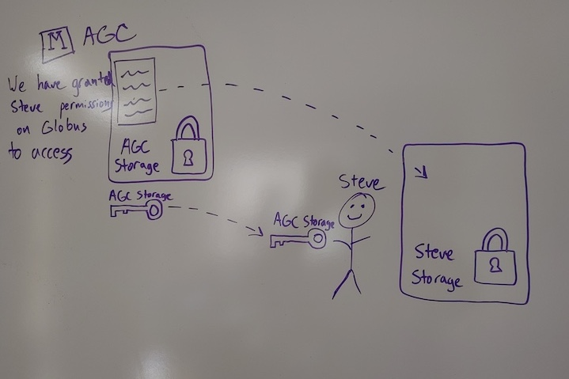
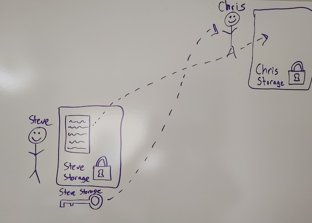

In this module, we will:
- review storage best practices and relate them to real
situations
- learn about the data transfer tool Globus
- gain real experience using Globus in various ways
Relating Data Transfer to Storage Best Practices with Typical
Examples
- I need to retrieve raw data from a data provider, and keep it in a
safe place
- I need to copy my raw data into a new location, to perform an
analysis
- I need to share my raw data and my analysis with a collaborator
Data Transfer
As you can see, data transfer itself is an important consideration
that goes hand in hand with our storage best practices described in the
previous module. Ensuring that data is transmitted and received intact,
and understanding the movement and placement of data during your
research life cycle is a very important aspect of reproducible
computing.
Globus
For the data transfer portion of this workshop, we’ll focus on a
software solution called Globus. Globus allows the transfer of data
between different storage systems, and it’s designed particularly for
transferring research data. Many universities and institutions,
including the University of Michigan, are using Globus in this way.
FIXME: Pre-emptively address question: Dropbox vs Globus?? Imagine a
comparative table Dropbox vs Globus. Globus is strictly transfer &
dropbox also offers cloud storage.
The standard features of Globus include: - Transfers faster than
SCP/SFTP (usually by a factor of two) - Automatic restarts or
continuation when transfers are disrupted - Background transfers so
users need not remain logged in to a system - Transfers of large files
between your laptop/desktop and servers via Global Connect Personal -
Transfer of small number of small files between your laptop/desktop via
a browser (note: not all server endpoints offer this feature)
U-M’s Globus Provider status adds the following features: - Sharing
of server directories/folders with non-U-M collaborators who are also
Globus users (for transfer/copy purposes, not shared use of server) -
U-M signed BAA for High Assurance feature for sensitive data - Sharing
of directories/folders from laptops/desktops via Globus Connect Personal
clients and a Globus Plus account upgrade.
Exercise Transferring Data from Data Provider to My Data Den

Exercise Transferring Data from Data Provider to My Turbo
Exercise Sharing Data With a Collaborator

Review Main Points
Must understand where the data currently resides, and where you want
to transfer it
Must understand who is responsible for performing the transfer
Unless this is arranged previously for an ongoing relationship,
someone will always need to grant permissions to
enable the transfer
FIXME - have another independent exercise (on Great Lakes)
FIXME - Slack thread asking for more scenarios of data transfer
tasks
LS0tCnRpdGxlOiAiVHJhbnNmZXJyaW5nIERhdGEgd2l0aCBHbG9idXMiCmF1dGhvcjogIlVNIEJpb2luZm9ybWF0aWNzIENvcmUiCm91dHB1dDoKICAgICAgICBodG1sX2RvY3VtZW50OgogICAgICAgICAgICBpbmNsdWRlczoKICAgICAgICAgICAgICAgIGluX2hlYWRlcjogaGVhZGVyLmh0bWwKICAgICAgICAgICAgdGhlbWU6IHBhcGVyCiAgICAgICAgICAgIHRvYzogdHJ1ZQogICAgICAgICAgICB0b2NfZGVwdGg6IDQKICAgICAgICAgICAgdG9jX2Zsb2F0OiB0cnVlCiAgICAgICAgICAgIG51bWJlcl9zZWN0aW9uczogZmFsc2UKICAgICAgICAgICAgZmlnX2NhcHRpb246IHRydWUKICAgICAgICAgICAgbWFya2Rvd246IEdGTQogICAgICAgICAgICBjb2RlX2Rvd25sb2FkOiB0cnVlCi0tLQo8c3R5bGUgdHlwZT0idGV4dC9jc3MiPgpib2R5eyAvKiBOb3JtYWwgICovCiAgICAgIGZvbnQtc2l6ZTogMTRwdDsKICB9CnByZSB7CiAgZm9udC1zaXplOiAxMnB0Cn0KPC9zdHlsZT4KCkluIHRoaXMgbW9kdWxlLCB3ZSB3aWxsOgoKKiByZXZpZXcgc3RvcmFnZSBiZXN0IHByYWN0aWNlcyBhbmQgcmVsYXRlIHRoZW0gdG8gcmVhbCBzaXR1YXRpb25zCiogbGVhcm4gYWJvdXQgdGhlIGRhdGEgdHJhbnNmZXIgdG9vbCBHbG9idXMKKiBnYWluIHJlYWwgZXhwZXJpZW5jZSB1c2luZyBHbG9idXMgaW4gdmFyaW91cyB3YXlzCgoKIyMgUmVsYXRpbmcgRGF0YSBUcmFuc2ZlciB0byBTdG9yYWdlIEJlc3QgUHJhY3RpY2VzIHdpdGggVHlwaWNhbCBFeGFtcGxlcwoKIC0gSSBuZWVkIHRvIHJldHJpZXZlIHJhdyBkYXRhIGZyb20gYSBkYXRhIHByb3ZpZGVyLCBhbmQga2VlcCBpdCBpbiBhIHNhZmUgcGxhY2UKIC0gSSBuZWVkIHRvIGNvcHkgbXkgcmF3IGRhdGEgaW50byBhIG5ldyBsb2NhdGlvbiwgdG8gcGVyZm9ybSBhbiBhbmFseXNpcwogLSBJIG5lZWQgdG8gc2hhcmUgbXkgcmF3IGRhdGEgYW5kIG15IGFuYWx5c2lzIHdpdGggYSBjb2xsYWJvcmF0b3IKCiMjIERhdGEgVHJhbnNmZXIKCkFzIHlvdSBjYW4gc2VlLCBkYXRhIHRyYW5zZmVyIGl0c2VsZiBpcyBhbiBpbXBvcnRhbnQgY29uc2lkZXJhdGlvbiB0aGF0IGdvZXMgaGFuZCBpbiBoYW5kIHdpdGggb3VyIHN0b3JhZ2UgYmVzdCBwcmFjdGljZXMgZGVzY3JpYmVkIGluIHRoZSBwcmV2aW91cyBtb2R1bGUuIEVuc3VyaW5nIHRoYXQgZGF0YSBpcyB0cmFuc21pdHRlZCBhbmQgcmVjZWl2ZWQgaW50YWN0LCBhbmQgdW5kZXJzdGFuZGluZyB0aGUgbW92ZW1lbnQgYW5kIHBsYWNlbWVudCBvZiBkYXRhIGR1cmluZyB5b3VyIHJlc2VhcmNoIGxpZmUgY3ljbGUgaXMgYSB2ZXJ5IGltcG9ydGFudCBhc3BlY3Qgb2YgcmVwcm9kdWNpYmxlIGNvbXB1dGluZy4KCgojIyBHbG9idXMKCkZvciB0aGUgZGF0YSB0cmFuc2ZlciBwb3J0aW9uIG9mIHRoaXMgd29ya3Nob3AsIHdlJ2xsIGZvY3VzIG9uIGEgc29mdHdhcmUgc29sdXRpb24gY2FsbGVkIEdsb2J1cy4gR2xvYnVzIGFsbG93cyB0aGUgdHJhbnNmZXIgb2YgZGF0YSBiZXR3ZWVuIGRpZmZlcmVudCBzdG9yYWdlIHN5c3RlbXMsIGFuZCBpdCdzIGRlc2lnbmVkIHBhcnRpY3VsYXJseSBmb3IgdHJhbnNmZXJyaW5nIHJlc2VhcmNoIGRhdGEuIE1hbnkgdW5pdmVyc2l0aWVzIGFuZCBpbnN0aXR1dGlvbnMsIGluY2x1ZGluZyB0aGUgVW5pdmVyc2l0eSBvZiBNaWNoaWdhbiwgYXJlIHVzaW5nIEdsb2J1cyBpbiB0aGlzIHdheS4KCkZJWE1FOiBQcmUtZW1wdGl2ZWx5IGFkZHJlc3MgcXVlc3Rpb246IERyb3Bib3ggdnMgR2xvYnVzPz8KSW1hZ2luZSBhIGNvbXBhcmF0aXZlIHRhYmxlIERyb3Bib3ggdnMgR2xvYnVzLiBHbG9idXMgaXMgc3RyaWN0bHkgdHJhbnNmZXIgJiBkcm9wYm94IGFsc28gb2ZmZXJzIGNsb3VkIHN0b3JhZ2UuCgpUaGUgc3RhbmRhcmQgZmVhdHVyZXMgb2YgR2xvYnVzIGluY2x1ZGU6Ci0gVHJhbnNmZXJzIGZhc3RlciB0aGFuIFNDUC9TRlRQICh1c3VhbGx5IGJ5IGEgZmFjdG9yIG9mIHR3bykKLSBBdXRvbWF0aWMgcmVzdGFydHMgb3IgY29udGludWF0aW9uIHdoZW4gdHJhbnNmZXJzIGFyZSBkaXNydXB0ZWQKLSBCYWNrZ3JvdW5kIHRyYW5zZmVycyBzbyB1c2VycyBuZWVkIG5vdCByZW1haW4gbG9nZ2VkIGluIHRvIGEgc3lzdGVtCi0gVHJhbnNmZXJzIG9mIGxhcmdlIGZpbGVzIGJldHdlZW4geW91ciBsYXB0b3AvZGVza3RvcCBhbmQgc2VydmVycyB2aWEgR2xvYmFsIENvbm5lY3QgUGVyc29uYWwKLSBUcmFuc2ZlciBvZiBzbWFsbCBudW1iZXIgb2Ygc21hbGwgZmlsZXMgYmV0d2VlbiB5b3VyIGxhcHRvcC9kZXNrdG9wIHZpYSBhIGJyb3dzZXIgKG5vdGU6IG5vdCBhbGwgc2VydmVyIGVuZHBvaW50cyBvZmZlciB0aGlzIGZlYXR1cmUpCgpVLU3igJlzIEdsb2J1cyBQcm92aWRlciBzdGF0dXMgYWRkcyB0aGUgZm9sbG93aW5nIGZlYXR1cmVzOgotIFNoYXJpbmcgb2Ygc2VydmVyIGRpcmVjdG9yaWVzL2ZvbGRlcnMgd2l0aCBub24tVS1NIGNvbGxhYm9yYXRvcnMgd2hvIGFyZSBhbHNvIEdsb2J1cyB1c2VycyAoZm9yIHRyYW5zZmVyL2NvcHkgcHVycG9zZXMsIG5vdCBzaGFyZWQgdXNlIG9mIHNlcnZlcikKLSBVLU0gc2lnbmVkIEJBQSBmb3IgSGlnaCBBc3N1cmFuY2UgZmVhdHVyZSBmb3Igc2Vuc2l0aXZlIGRhdGEKLSBTaGFyaW5nIG9mIGRpcmVjdG9yaWVzL2ZvbGRlcnMgZnJvbSBsYXB0b3BzL2Rlc2t0b3BzIHZpYSBHbG9idXMgQ29ubmVjdCBQZXJzb25hbCBjbGllbnRzIGFuZCBhIEdsb2J1cyBQbHVzIGFjY291bnQgdXBncmFkZS4KCiMjIEV4ZXJjaXNlIFRyYW5zZmVycmluZyBEYXRhIGZyb20gRGF0YSBQcm92aWRlciB0byBNeSBEYXRhIERlbgoKIVtdKGltYWdlcy9Nb2R1bGUwMl9kYXRhX3NoYXJlZF93aXRoX21lX0lfdHJhbnNmZXIuanBnKQoKIyMgRXhlcmNpc2UgVHJhbnNmZXJyaW5nIERhdGEgZnJvbSBEYXRhIFByb3ZpZGVyIHRvIE15IFR1cmJvCgojIyBFeGVyY2lzZSBTaGFyaW5nIERhdGEgV2l0aCBhIENvbGxhYm9yYXRvcgoKIVtdKGltYWdlcy9Nb2R1bGUwMl9kYXRhX0lfc2hhcmVfY29sbGFib3JhdG9yX3RyYW5zZmVycy5qcGcpCgo8YnI+Cjxicj4KCiMjIFJldmlldyBNYWluIFBvaW50cwoKTXVzdCB1bmRlcnN0YW5kIHdoZXJlIHRoZSBkYXRhIGN1cnJlbnRseSByZXNpZGVzLCBhbmQgd2hlcmUgeW91IHdhbnQgdG8gdHJhbnNmZXIgaXQKCk11c3QgdW5kZXJzdGFuZCB3aG8gaXMgcmVzcG9uc2libGUgZm9yIHBlcmZvcm1pbmcgdGhlIHRyYW5zZmVyCgpVbmxlc3MgdGhpcyBpcyBhcnJhbmdlZCBwcmV2aW91c2x5IGZvciBhbiBvbmdvaW5nIHJlbGF0aW9uc2hpcCwgKnNvbWVvbmUqIHdpbGwgKmFsd2F5cyogbmVlZCB0byBncmFudCBwZXJtaXNzaW9ucyB0byBlbmFibGUgdGhlIHRyYW5zZmVyCgojIyBGSVhNRSAtIGhhdmUgYW5vdGhlciBpbmRlcGVuZGVudCBleGVyY2lzZSAob24gR3JlYXQgTGFrZXMpCgojIyBGSVhNRSAtIFNsYWNrIHRocmVhZCBhc2tpbmcgZm9yIG1vcmUgc2NlbmFyaW9zIG9mIGRhdGEgdHJhbnNmZXIgdGFza3MKCgp8IFtCYWNrIHRvIEludHJvZHVjdGlvbl0oTW9kdWxlMDBfSW50cm9kdWN0aW9uLmh0bWwpIHwgW1RvcCBvZiB0aGlzIGxlc3Nvbl0oI3RvcCkgfCBbTmV4dCBsZXNzb25dKE1vZHVsZSBGSVhNRSAuaHRtbCkgfAp8IDotLS0gfCA6LS0tLTogfCAtLS06IHwK